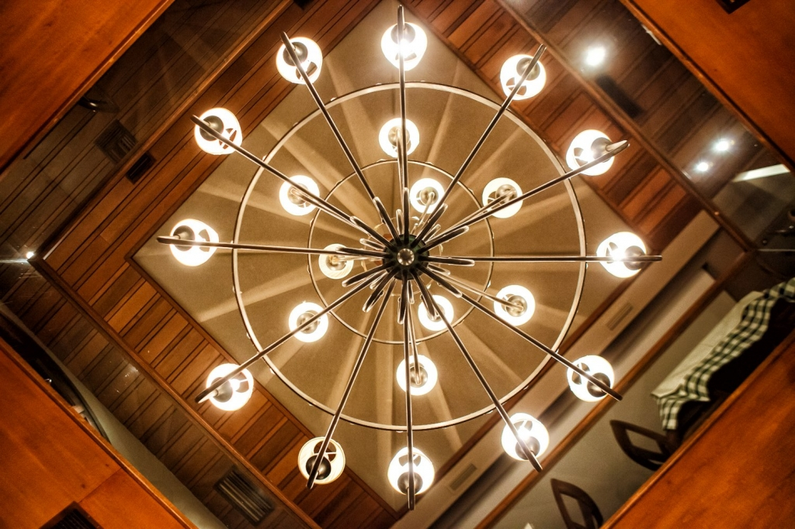

Ο Κήπος της Πανδρόσου
Εστιατόριο · Πλάκα, Αθήνα
Μενού
Ιστορία
Πληροφορίες
Κράτηση
×
Μενού
Ιστορία
Πληροφορίες
Κάντε Κράτηση
Επιλογή Γλώσσας:
EN
EL
Το Ταξίδι μας από το 1981

Η Φιλοσοφία μας
← Επιστροφή στην Αρχική